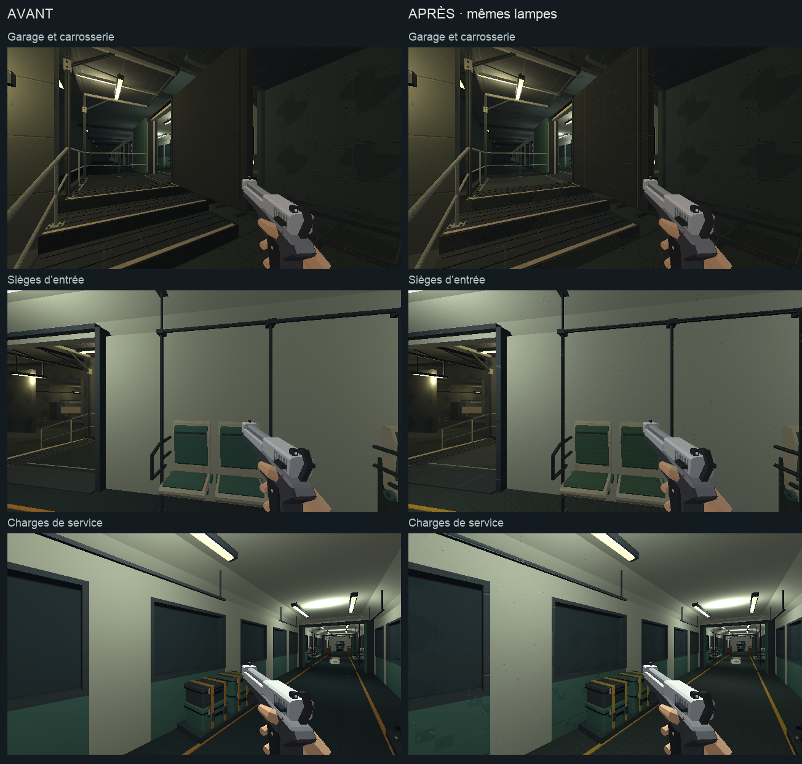
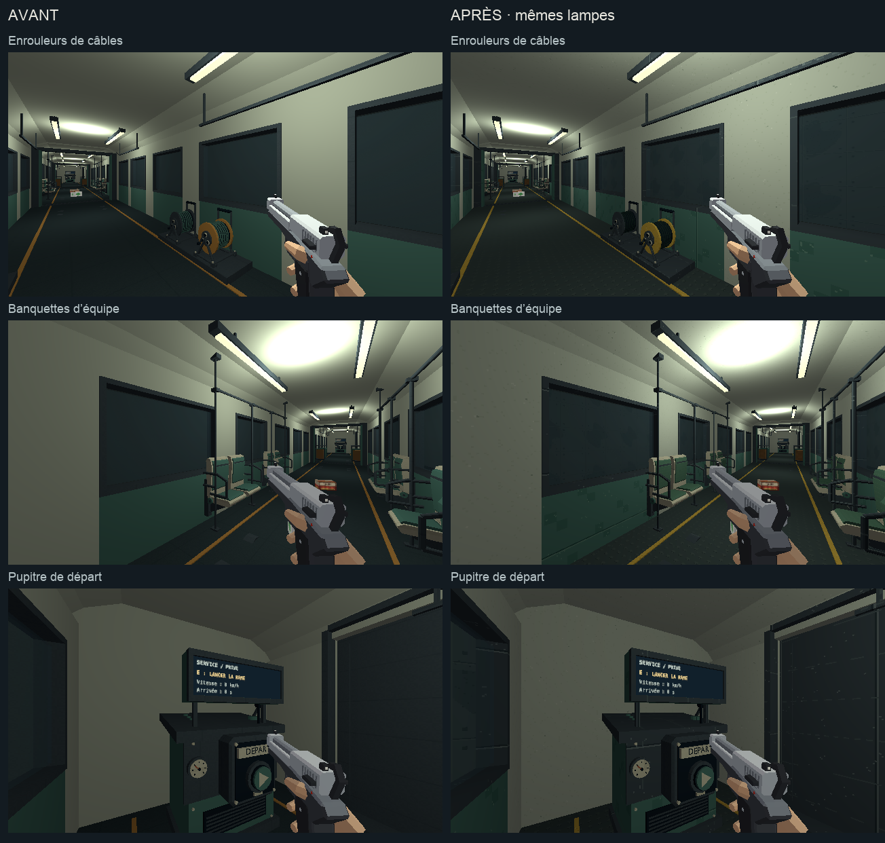
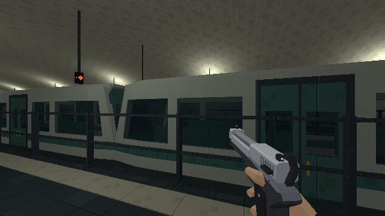
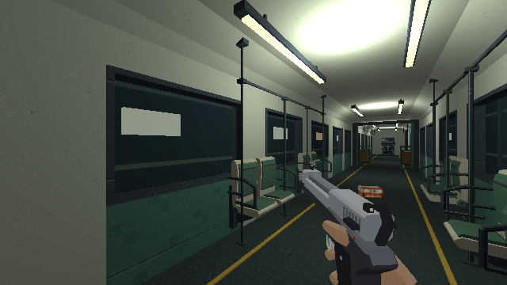

PROJET CASSANDRE · HARMONISATION · ÉTAPE 2
Rame de service du métro
Carrosserie claire, sièges en tissu vert, sol en caoutchouc et matériel de maintenance dans la palette commune du métro.
Étalon approuvé · Charte commune · Compte rendu de cette passe · Station privée et parvis · Dépôt et ateliers · Passe suivante : entrée et caisses du magasin
Chargement du métro…
Les ennemis sont neutralisés et les trains suspendus pour comparer les surfaces. « Rames de passage », puis « Relancer les trains » montre les voitures de ligne. Pour le voyage de revue, choisis une vue intérieure ; la durée normale de campagne est rétablie après le trajet. Clique dans le jeu pour parcourir les lieux ; Échap libère la souris.
Pose et équipement
En attente…
Avant et après
Avant à gauche, après à droite. Même pose demandée, même lumière et même équipement.

Câbles, banquettes et pupitre

En circulation
Voiture de ligne au quai, puis intérieur de la rame de service pendant le trajet de revue.

